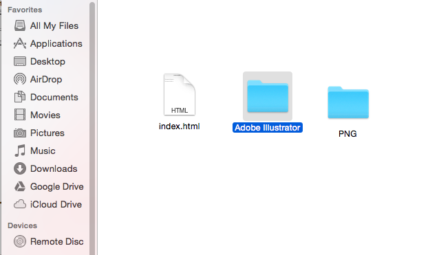

Image Size & Resolutions
Image Size & ResolutionsHow to manage your files (PHYSICS & MATHEMATICS)
Managing your files as below. There should be no difference.
Step 1: Make a folder of the chapter name. (For ex: Laws of Motion)

Step 2: Inside the chapter folder, there should be separate folders for Adobe Illustrator & PNG Files. The 'Komposer' file is saved as index.html

All the files of the Adobe Illustrator will be in the Adobe Illustrator folder. Similarly all the image files should be in the PNG format and should be placed in the PNG folder. The image below guides you the same.

How to manage your files (CHEMISTRY)
Step 1: Make a folder of the chapter name. (For ex: General Organic Chemistry)

Step 2: Inside the chapter folder, there should be separate folders for Adobe Illustrator, PNG Files, Marvins & PNG-Marvins. The 'Komposer' file is saved as index.html

All the files of the Adobe Illustrator will be in the Adobe Illustrator folder. Similarly all the image files should be in the PNG format and should be placed in the PNG folder.
Also, Mavrins(*mvr files) should be in the Mavrins folder and the PNG of the mavrins files should be placed in the PNG-Mavrins folder.
The image below guides you the same.
Credits: Upendra Sai Teja

Copyright ThinkMerit. All rights
reserved.